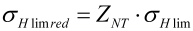
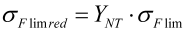

|
|
|


按 ISO 6336 定义的有限寿命系数
按照 ISO 6336-2:2006 设置有限寿命系数 ZNT，以降低许用材料应力：
|  | (12.14) |
|  | (12.15) |
如 ISO 6336 所述，此值对圆柱齿轮计算至关重要，与 DIN 3990 相比，也是耐久极限范围内安全系数较低的原因。
- 正常（在 1010 次循环时降至 0.85）： 耐久极限范围内（齿根和齿面）的许用材料应力再次降低。有限寿命系数 YNT 和 ZNT 在 ≥1010 次载荷循环时设为 0.85。
- 如果质量更好，系数会提高（降至 0.92）： YNT 和 ZNT 在 ≥1010 次载荷循环时设为 0.92（依照 ISO 9085）。
- 带有最佳质量和经验（始终为1.0）： 这消除了减量，因此对应于 DIN 3990。然而，这假设材料的最佳处理和监控。
English Original
Limited life coefficients as defined in ISO 6336
Set the limited life coefficient ZNT to reduce the permitted material stress according to ISO 6336-2:2006:
| (12.14) | |
| (12.15) |
As stated in ISO 6336, this value is important for cylindrical gear calculations and is the reason for the lower safeties for the range of endurance limit, compared with DIN 3990.
- normal (reduction to 0.85 for 1010 cycles): The permitted material stress in the range of endurance limit (root and flank) is reduced again. The limited life coefficients Y NT and ZNT are set to 0.85 for ≥1010 load cycles.
- increased if the quality is better (reduced to 0.92): Y NT and ZNT are set to 10 for ≥10 load cycles (in accordance with ISO 9085).
- with optimum quality and experience (always 1.0): This removes the reduction and therefore corresponds to DIN 3990. However, this assumes the optimum treatment and monitoring of the materials.